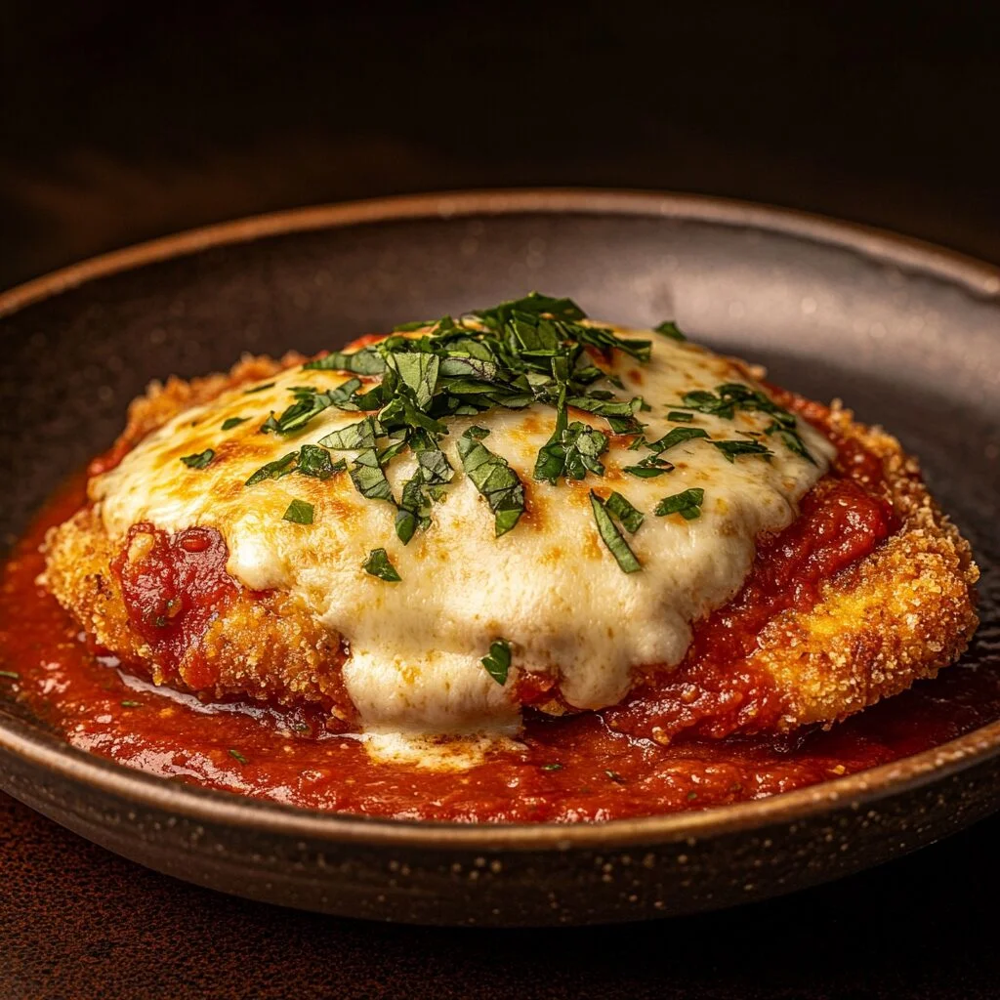

Filé de frango á parmegiana

Ingredientes
- 4 filés de frango
- 2 ovos
- Farinha de rosca
- Molho de tomate
- 200g de queijo mussarela
- Sal e lemon pepper a gosto
- Óleo para fritar
Modo de Preparo
- Tempere os filés com sal e lemon pepper.
- Passe os filés nos ovos e depois na farinha de trigo.
- Frite até dourar.
- Coloque os filés em uma assadeira.
- Adicione o molho de tomate.
- Cubra com a mussarela.
- Leve ao forno até o queijo derreter.
- Sirva quente.